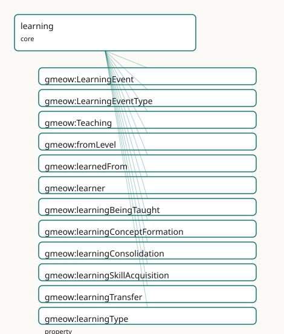

GMEOW Learning Module
- IRI: https://blackcatinformatics.ca/gmeow/slices/learning
- Tier: core
Group: core
What This Slice Covers
This slice owns 17 terms and contributes 6 mapping or projection rows. Use it when its terms match the native fact you want to preserve; use the linkage tables to see how those facts leave GMEOW for consumer vocabularies.
Dependencies
gmeow:slices/cognitiongmeow:slices/eventsgmeow:slices/expertisegmeow:slices/kernelgmeow:slices/mentationgmeow:slices/sourcesgmeow:slices/temporal
Consumers
- How agent memory GROWS (Principle 14): when, from whom, and how an agent came to know something — the GTS ai-package belief-acquisition log. A
gmeow:LearningEventrecords the transition that raised agmeow:KnowledgeProficiencyorgmeow:SkillProficiency;gmeow:learnedFromcarries the provenance of acquired knowledge; pedagogy and rubric consumers (the teleology / rubrics slices) readgmeow:Teaching. Forgetting is suppression (cognition'sgmeow:remembers+gmeow:displayablefalse), referenced here, never re-minted.
Local Map

Examples
Skill Acquisition Trajectory
- Source:
slices/core/learning/examples/skill-acquisition-trajectory.ttl - GMEOW terms:
gmeow:Agent,gmeow:CreativeWork,gmeow:LearningEvent,gmeow:Skill,gmeow:SkillProficiency,gmeow:TimeInterval,gmeow:displayable,gmeow:dreyfusAdvancedBeginner,gmeow:dreyfusExpert,gmeow:dreyfusNovice - External prefixes:
xsd
# SPDX-FileCopyrightText: 2026 Blackcat Informatics® Inc. <paudley@blackcatinformatics.ca>
# SPDX-License-Identifier: CC-BY-4.0
#
# Worked example: a proficiency RISE as a SEQUENCE of tenures, never a mutation.
# Two gmeow:LearningEvent occurrents raise lillith's cycling skill — a skill
# acquisition (novice → advanced beginner) and a consolidating practice block
# (advanced beginner → expert). Each event gmeow:produces its OWN reified
# gmeow:SkillProficiency relator, scoped by its own interval; the earlier tenure
# is kept with gmeow:displayable false rather than overwritten (Principle 10).
# The trajectory of one event rides gmeow:fromLevel / gmeow:toLevel; the durable
# standing is the proficiency tenure the event produced.
@prefix gmeow: <https://blackcatinformatics.ca/gmeow/> .
@prefix ex: <https://blackcatinformatics.ca/gmeow/examples/learning/> .
@prefix rdfs: <http://www.w3.org/2000/01/rdf-schema#> .
@prefix xsd: <http://www.w3.org/2001/XMLSchema#> .
ex:lillith a gmeow:Agent ;
rdfs:label "Lillith"@en .
ex:cycling a gmeow:Skill ;
rdfs:label "riding a bicycle"@en .
ex:textbook a gmeow:CreativeWork ;
rdfs:label "Cycling: a beginner's manual"@en .
# --- Event 1: skill acquisition, novice → advanced beginner (the spring).
ex:firstLessons a gmeow:LearningEvent ;
gmeow:experiencer ex:lillith ;
gmeow:mentalProcessType gmeow:processLearning ;
gmeow:learningType gmeow:learningSkillAcquisition ;
gmeow:learnedFrom ex:textbook ;
gmeow:fromLevel gmeow:dreyfusNovice ;
gmeow:toLevel gmeow:dreyfusAdvancedBeginner ;
gmeow:produces ex:profSpring ;
gmeow:eventTime "2026-03-15T10:00:00Z"^^xsd:dateTime ; # temporal placement — CONSTITUTION P11
gmeow:eventTemporalFrame gmeow:temporalFrameUTCGregorian ;
rdfs:label "first cycling lessons"@en .
# The proficiency tenure the first event produced — now SUPERSEDED, kept (not
# deleted) with gmeow:displayable false: the earlier rung of the sequence.
ex:profSpring a gmeow:SkillProficiency ;
gmeow:skillProficiencyAgent ex:lillith ;
gmeow:skillProficiencyOf ex:cycling ;
gmeow:skillProficiencyLevel gmeow:dreyfusAdvancedBeginner ;
gmeow:skillProficiencyScale gmeow:scaleDreyfus ;
gmeow:skillProficiencyInterval ex:springInterval ;
gmeow:displayable false ;
rdfs:label "cycling proficiency (spring): advanced beginner"@en .
ex:springInterval a gmeow:TimeInterval ;
gmeow:startedAtTime "2026-03-01T00:00:00Z"^^xsd:dateTime ;
gmeow:endedAtTime "2026-05-31T23:59:59Z"^^xsd:dateTime .
# --- Event 2: consolidating practice, advanced beginner → expert (the summer).
# Two varieties co-apply (P9): it both consolidates and further acquires.
ex:summerPractice a gmeow:LearningEvent ;
gmeow:experiencer ex:lillith ;
gmeow:mentalProcessType gmeow:processLearning ;
gmeow:learningType gmeow:learningConsolidation, gmeow:learningSkillAcquisition ;
gmeow:fromLevel gmeow:dreyfusAdvancedBeginner ;
gmeow:toLevel gmeow:dreyfusExpert ;
gmeow:produces ex:profSummer ;
gmeow:eventTime "2026-08-15T10:00:00Z"^^xsd:dateTime ; # temporal placement — CONSTITUTION P11
gmeow:eventTemporalFrame gmeow:temporalFrameUTCGregorian ;
rdfs:label "a summer of daily practice"@en .
# The current proficiency tenure — a NEW relator, not a mutation of ex:profSpring.
ex:profSummer a gmeow:SkillProficiency ;
gmeow:skillProficiencyAgent ex:lillith ;
gmeow:skillProficiencyOf ex:cycling ;
gmeow:skillProficiencyLevel gmeow:dreyfusExpert ;
gmeow:skillProficiencyScale gmeow:scaleDreyfus ;
gmeow:skillProficiencyInterval ex:summerInterval ;
rdfs:label "cycling proficiency (summer): expert"@en .
ex:summerInterval a gmeow:TimeInterval ;
gmeow:startedAtTime "2026-06-01T00:00:00Z"^^xsd:dateTime .
Teaching And Being Taught
- Source:
slices/core/learning/examples/teaching-and-being-taught.ttl - GMEOW terms:
gmeow:Agent,gmeow:CognitiveState,gmeow:LearningEvent,gmeow:Skill,gmeow:Teaching,gmeow:eventTemporalFrame,gmeow:eventTime,gmeow:experiencer,gmeow:learnedFrom,gmeow:learner - External prefixes:
xsd
# SPDX-FileCopyrightText: 2026 Blackcat Informatics® Inc. <paudley@blackcatinformatics.ca>
# SPDX-License-Identifier: CC-BY-4.0
#
# Worked example: the two faces of instruction. A gmeow:Teaching relator reifies
# the instruction relation — one teacher, two learners taught together, one
# subject — making the roles first-class; teacher ≠ learner is enforced by
# gmeow:TeachingShape (SHACL), so an agent never teaches itself. Each learner's
# OWN acquisition is a separate gmeow:LearningEvent of variety
# gmeow:learningBeingTaught that gmeow:learnedFrom the teacher and gmeow:produces
# the cognitive state it settled — the being-taught face of learning, paired with
# the teaching relator the events participate in.
@prefix gmeow: <https://blackcatinformatics.ca/gmeow/> .
@prefix ex: <https://blackcatinformatics.ca/gmeow/examples/learning/> .
@prefix rdfs: <http://www.w3.org/2000/01/rdf-schema#> .
@prefix xsd: <http://www.w3.org/2001/XMLSchema#> .
ex:mentor a gmeow:Agent ;
rdfs:label "the cycling coach"@en .
ex:lillith a gmeow:Agent ;
rdfs:label "Lillith"@en .
ex:rowan a gmeow:Agent ;
rdfs:label "Rowan"@en .
ex:balancing a gmeow:Skill ;
rdfs:label "balancing on two wheels"@en .
# --- The reified instruction: one teacher, TWO learners taught together, one
# subject. teacher ≠ learner (gmeow:TeachingShape); co-taught learners share
# ONE gmeow:Teaching rather than one Teaching each.
ex:lesson a gmeow:Teaching ;
gmeow:teacher ex:mentor ;
gmeow:learner ex:lillith, ex:rowan ;
gmeow:subjectTaught ex:balancing ;
rdfs:label "a group balancing lesson"@en .
# --- Lillith's own acquisition: a being-taught LearningEvent, learned FROM the
# teacher, producing the cognitive state it settled.
ex:lillithLearns a gmeow:LearningEvent ;
gmeow:experiencer ex:lillith ;
gmeow:mentalProcessType gmeow:processLearning ;
gmeow:learningType gmeow:learningBeingTaught ;
gmeow:learnedFrom ex:mentor ;
gmeow:produces ex:lillithBalances ;
gmeow:eventTime "2026-06-15T14:00:00Z"^^xsd:dateTime ; # temporal placement — CONSTITUTION P11
gmeow:eventTemporalFrame gmeow:temporalFrameUTCGregorian ;
rdfs:label "Lillith learns to balance"@en .
ex:lillithBalances a gmeow:CognitiveState ;
rdfs:label "Lillith's grasp of balancing"@en .
# --- Rowan's acquisition is a DISTINCT event sharing the one gmeow:Teaching: two
# learners, two LearningEvents, one instruction relation.
ex:rowanLearns a gmeow:LearningEvent ;
gmeow:experiencer ex:rowan ;
gmeow:mentalProcessType gmeow:processLearning ;
gmeow:learningType gmeow:learningBeingTaught ;
gmeow:learnedFrom ex:mentor ;
gmeow:produces ex:rowanBalances ;
gmeow:eventTime "2026-06-15T14:30:00Z"^^xsd:dateTime ; # temporal placement — CONSTITUTION P11
gmeow:eventTemporalFrame gmeow:temporalFrameUTCGregorian ;
rdfs:label "Rowan learns to balance"@en .
ex:rowanBalances a gmeow:CognitiveState ;
rdfs:label "Rowan's grasp of balancing"@en .
Terms
Classes
| Term | Label | Definition |
|---|---|---|
gmeow:LearningEvent |
Learning Event | The occurrent that transitions an agent along the cognition knowledge spectrum or the expertise proficiency scale — learning as it unfolds in time: an acquisit... |
gmeow:LearningEventType |
Learning Event Type | The variety of a learning event — a value vocabulary spanning concept-formation, skill-acquisition, being-taught, consolidation, transfer, and unlearning: gmeo... |
gmeow:Teaching |
Teaching | A reified teaching relation — one teacher, one or more learners, and the subject taught, mediated as a gufo:Relator so the roles, period, confidence, and evide... |
Properties
| Term | Label | Definition |
|---|---|---|
gmeow:fromLevel |
from level | The proficiency or knowledge level an agent held BEFORE a learning event — the start of the trajectory. The RANGE is left intentionally open: the level is a co... |
gmeow:learnedFrom |
learned from | Relates a learning event to what the agent learned from — the provenance of acquired knowledge. The RANGE is left intentionally open: the source is typically a... |
gmeow:learner |
learner | An agent receiving instruction in a gmeow:Teaching relation. NON-functional: several learners may be taught together in one Teaching. Each learner's own acquis... |
gmeow:learningType |
learning type | Classifies a learning event by its variety — one or more of the gmeow:LearningEventType value vocabulary. NOT functional: a single event may carry several vari... |
gmeow:produces |
produces | Relates a learning event to the knowledge state it raised or settled — its product. The RANGE is left intentionally open: the product is typically a cognition... |
gmeow:subjectTaught |
subject taught | The content taught in a gmeow:Teaching relation — the topic, skill, or proposition instruction conveyed. The RANGE is left intentionally open: the subject is t... |
gmeow:teacher |
teacher | The agent providing instruction in a gmeow:Teaching relation. Functional: one teaching, one teacher; co-teaching is several gmeow:Teaching relators sharing a g... |
gmeow:toLevel |
to level | The proficiency or knowledge level an agent reached AFTER a learning event — the end of the trajectory. The RANGE is left intentionally open, exactly as gmeow:... |
Individuals
| Term | Label | Definition |
|---|---|---|
gmeow:learningBeingTaught |
being taught | A learning event in which the agent learns through instruction from a teacher — the learner-side face of a gmeow:Teaching relator. The teacher and the taught s... |
gmeow:learningConceptFormation |
concept formation | A learning event in which the agent forms a new concept — acquiring a category, schema, or abstraction it did not previously hold. Bridges the forthcoming conc... |
gmeow:learningConsolidation |
consolidation | A learning event that strengthens or stabilises already-acquired knowledge or skill — rehearsal, practice, or sleep-based memory consolidation — without introd... |
gmeow:learningSkillAcquisition |
skill acquisition | A learning event that raises an agent's procedural competence — moving it up the expertise proficiency scale (e.g. a Dreyfus step from novice toward expert). T... |
gmeow:learningTransfer |
transfer | A learning event in which knowledge or skill acquired in one domain is applied to a new domain — analogical transfer. Bridges the inference slice: the source-t... |
gmeow:learningUnlearning |
unlearning | A learning event of revision — the agent retires or supersedes previously-held knowledge or skill as it learns. Unlearning is modelled as suppression of the pr... |
Linkages
- Rows: 6
- Projection profiles: -
- External vocabularies:
prov,schema
| Source | Kind | Profile | Predicate/Relation | Target | Evidence |
|---|---|---|---|---|---|
gmeow:LearningEvent |
equivalence | - |
skos:closeMatch | prov:Activity | gmeow-learning.sssom.tsv; gmeow:eqLrn004; confidence 0.6 |
gmeow:LearningEvent |
equivalence | - |
skos:closeMatch | schema:LearnAction | gmeow-learning.sssom.tsv; gmeow:eqLrn001; confidence 0.8 |
gmeow:Teaching |
equivalence | - |
skos:closeMatch | schema:TeachAction | gmeow-learning.sssom.tsv; gmeow:eqLrn002; confidence 0.7 |
gmeow:learnedFrom |
equivalence | - |
skos:closeMatch | prov:wasDerivedFrom | gmeow-learning.sssom.tsv; gmeow:eqLrn005; confidence 0.6 |
gmeow:produces |
equivalence | - |
skos:closeMatch | prov:generated | gmeow-learning.sssom.tsv; gmeow:eqLrn006; confidence 0.7 |
gmeow:subjectTaught |
equivalence | - |
skos:closeMatch | schema:teaches | gmeow-learning.sssom.tsv; gmeow:eqLrn003; confidence 0.7 |
Guide
Learning
Slice:
https://blackcatinformatics.ca/gmeow/slices/learning· tier: core
Learning as process — the occurrent that transitions an agent along the cognition knowledge
spectrum or the expertise proficiency scale. The cognition slice models the endurant
gmeow:KnowledgeProficiency and the expertise slice models the endurant gmeow:SkillProficiency;
this slice models the occurrent gmeow:LearningEvent that changes those states — acquisition,
being-taught, consolidation, transfer, and unlearning. Memory-as-storage (flagship store/recall) is
not learning; learning is the event that grew what an agent knows.
The occurrent/endurant split
The mentation slice reserves gmeow:MentalProcess as an umbrella for occurrent mental events.
gmeow:LearningEvent reparents under it — never re-roots it — inheriting gmeow:experiencer and the
unified mental-timeline stream. The split keeps the gUFO ontological partition clean:
| Layer | Class | Mode |
|---|---|---|
| state | gmeow:KnowledgeProficiency (cognition) |
endurant — what an agent knows |
| state | gmeow:SkillProficiency (expertise) |
endurant — what an agent can do |
| event | gmeow:LearningEvent |
occurrent — what changed those states |
A gmeow:LearningEvent links to the enduring states it settled via gmeow:produces, to its
start/end levels via gmeow:fromLevel / gmeow:toLevel, and to its source via gmeow:learnedFrom.
gmeow:LearningEvent
The occurrent that transitions an agent along the cognition knowledge spectrum or the expertise
proficiency scale — learning as it unfolds in time. A gmeow:MentalProcess (gufo:EventType), it is
borne by exactly one gmeow:experiencer (inherited) and joins the agent's single occurrent
mental-timeline stream. The class asserts that a learning process occurred; the variety is a
gmeow:LearningEventType value carried by gmeow:learningType (Principle 9, never a subclass).
Timeline-parity fields — the cross-slice contract. Like every sibling occurrent on the mental
timeline, a gmeow:LearningEvent carries:
gmeow:mentalProcessTypegmeow:processLearning— the uniform occurrent query handle (it mirrorsgmeow:eventType), declared once on the mentation spine, so a timeline query filtering bygmeow:mentalProcessTypesurfaces learning episodes exactly as agmeow:InferenceProcesscarriesgmeow:processReasoning. This is the single canonical occurrent marker — no redundant second value is minted (Principle 4); the orthogonal variety ridesgmeow:learningType.- a temporal placement —
gmeow:eventTime(anxsd:dateTime) and[gmeow:eventTemporalFrame](../reference/properties/gmeow-eventTemporalFrame.md) [gmeow:temporalFrameUTCGregorian](../reference/individuals/gmeow-temporalFrameUTCGregorian.md)(CONSTITUTION P11: a value asserted without its reference frame is ill-formed).
Learning event types
gmeow:LearningEventType is an open value vocabulary ([gufo:AbstractIndividualType](../external/terms.md#gufo-abstractindividualtype) ⊑
[gufo:QualityValue](../external/terms.md#gufo-qualityvalue)) whose members are individuals, never subclasses (Principle 9). More than one
may co-apply to a single event (gmeow:learningType is non-functional): a transfer that also
consolidates is both gmeow:learningTransfer and gmeow:learningConsolidation.
| Value | Kind | What it marks |
|---|---|---|
gmeow:learningConceptFormation |
concept formation | agent forms a new category or abstraction |
gmeow:learningSkillAcquisition |
skill acquisition | agent moves up the expertise proficiency scale |
gmeow:learningBeingTaught |
being taught | agent learns through instruction from a teacher |
gmeow:learningConsolidation |
consolidation | agent strengthens or stabilises already-acquired knowledge |
gmeow:learningTransfer |
transfer | agent applies knowledge from one domain to a new one |
gmeow:learningUnlearning |
unlearning | agent retires or supersedes previously-held knowledge |
Two type values carry documented routing bridges (no axiom): gmeow:learningTransfer routes to the
inference slice's gmeow:Analogy (the source-to-target structure-mapping that warrants the transfer);
gmeow:learningConceptFormation bridges to the forthcoming concepts slice. Neither carries a
reasoner-enforced relation in core — the bridges are routing for consumers, not entailments.
Forgetting is suppression, not a new term. There is deliberately no gmeow:forgets /
gmeow:forgotten term. Forgetting is the cognition slice's gmeow:remembers withdrawn by
gmeow:displayable false; gmeow:learningUnlearning names the revision event, not a deletion
construct.
gmeow:LearningEventType · gmeow:learningType
gmeow:LearningEventType is the open value vocabulary of learning varieties; gmeow:learningType
(domain gmeow:LearningEvent, range gmeow:LearningEventType) classifies an event by pointing it
at one or more of those values. Non-functional by design — several varieties may co-apply. Extend
the vocabulary by minting a fresh gmeow:LearningEventType individual, never by subclassing
gmeow:LearningEvent (Principle 9).
Provenance, trajectory, and product
Three open-range properties carry what the learning came from, the levels it moved between, and
the state it produced. All ranges are left intentionally open (Principle 13): the target
classes are either not yet built (gmeow:Concept) or retired (gmeow:Source, superseded by
gmeow:CreativeWork plus a source-role).
gmeow:learnedFrom
Relates a gmeow:LearningEvent to what the agent learned from — the provenance of acquired
knowledge. Open range: typically a gmeow:CreativeWork, a teaching gmeow:Agent, or a body of
evidence, but the surface is never prematurely closed. Non-functional — a learning event may draw on
several sources. Do not revive the retired gmeow:Source class; point at a gmeow:CreativeWork
plus a source-role.
gmeow:fromLevel · gmeow:toLevel
gmeow:fromLevel is the proficiency or knowledge level an agent held before a learning event;
gmeow:toLevel is the level reached after. Both have an open range (a cognition
gmeow:KnowledgeLevel or an expertise gmeow:ProficiencyLevel are equally admitted) and are
non-functional. For a consolidation event gmeow:toLevel may equal gmeow:fromLevel (the level
is stabilised, not raised).
Trajectory, not mutation (Principle 10). gmeow:fromLevel / gmeow:toLevel record the
endpoints of one event. An agent's standing over time is a sequence of reified
gmeow:KnowledgeProficiency / gmeow:SkillProficiency tenures, each scoped by its own interval
(the temporal gmeow:TimeScopedRelation idiom), with the prior tenure kept via [gmeow:displayable](../reference/properties/gmeow-displayable.md)
false rather than overwritten — never the in-place mutation of one relator.
gmeow:produces
Relates a gmeow:LearningEvent to the knowledge state it raised or settled — its product. Open
range: typically a cognition gmeow:CognitiveState or gmeow:KnowledgeProficiency, an expertise
gmeow:SkillProficiency, or (once the concepts slice lands) a gmeow:Concept. Non-functional —
one event may settle several states. The occurrent/endurant bridge: the event produces the
enduring state, keeping the gUFO split clean.
Teaching — the instruction relator
gmeow:Teaching is the gmeow:Participation-style relator (gufo:Relator) mediating one teacher,
one or more learners, and the subject taught — the being-taught face of learning. Reifying the
instruction makes the roles, period, confidence, and evidence of teaching first-class. The 80% case
(learner acquires from a source) is a bare gmeow:LearningEvent with gmeow:learnedFrom; reach for
gmeow:Teaching only when the instruction relation itself is the fact of interest (Principle 4).
Teacher must differ from every learner. An agent cannot teach itself. This is a closed-world
well-formedness rule enforced by gmeow:TeachingShape (SHACL) — not a DL axiom, keeping the
reasoned profile within OWL 2 EL. The open-world "some teacher, some learner" mediation rides
owl:someValuesFrom restrictions in module.ttl.
gmeow:Teaching
A reified teaching relation (gufo:Relator, gufo:Kind) — one teacher, one or more learners, and
the subject taught. Three role properties: gmeow:teacher (functional, range gmeow:Agent),
gmeow:learner (non-functional, range gmeow:Agent), and gmeow:subjectTaught (non-functional,
open range). Co-teaching is several gmeow:Teaching relators sharing a subject and learner set,
not one Teaching with multiple teachers. Retract a withdrawn role with gmeow:displayable false,
never deletion (Principle 10).
gmeow:teacher · gmeow:learner · gmeow:subjectTaught
gmeow:teacher (functional) names the single gmeow:Agent giving instruction; gmeow:learner
(non-functional) names each gmeow:Agent receiving instruction — a class taught together shares one
gmeow:Teaching. gmeow:subjectTaught (non-functional, open range) records what a Teaching
conveyed — a concept (the forthcoming gmeow:Concept), a gmeow:Skill, or a gmeow:Proposition are
all admitted. gmeow:TeachingShape enforces that no agent is both gmeow:teacher and gmeow:learner
of the same Teaching.
SSSOM alignments (mappings/equivalences.ttl)
Authored in mappings/equivalences.ttl and compiled to mappings/gmeow-learning.sssom.tsv by
gmeow compile-mappings. All by reference (Principle 5) — GMEOW never imports an external axiom.
Alignments are deliberately loose (skos:closeMatch, not equivalentClass): schema.org models the
act of learning/teaching, GMEOW models the cognitive-state-transition event; PROV-O models the
activity / provenance face.
| GMEOW | Predicate | Target | Note |
|---|---|---|---|
gmeow:LearningEvent |
skos:closeMatch |
schema:LearnAction |
schema:LearnAction is the act of gaining knowledge; gmeow:LearningEvent is the state-transition occurrent carrying trajectory, variety, and product |
gmeow:Teaching |
skos:closeMatch |
schema:TeachAction |
schema:TeachAction is the act of imparting knowledge; gmeow:Teaching is the reified gufo:Relator mediating roles |
gmeow:subjectTaught |
skos:closeMatch |
schema:teaches |
schema:teaches links a learning resource to a competency; gmeow:subjectTaught links a reified relator to its content |
gmeow:LearningEvent |
skos:closeMatch |
prov:Activity |
a gmeow:LearningEvent is a prov:Activity that generates a knowledge entity, with richer trajectory and the gUFO occurrent/endurant split |
gmeow:learnedFrom |
skos:closeMatch |
prov:wasDerivedFrom |
provenance of acquired knowledge vs. entity derivation — closeMatch across the entity/event shift |
gmeow:produces |
skos:closeMatch |
prov:generated |
both relate a process to its produced entity; gmeow:produces specifies the settled knowledge state |
xAPI (the Experience API) is the strongest external consumer — learning records keyed by
<http://adlnet.gov/expapi/verbs/learned> — but it is a JSON Statement model with no stable OWL
class IRIs, so gmeow:LearningEvent projects down to an xAPI Statement at the projection layer
and is referenced in prose, not mapped as a gmeow:TermEquivalence.
Dependencies
| Slice | Why |
|---|---|
kernel |
gmeow:Agent — the experiencer, teacher, and learner domain |
mentation |
gmeow:MentalProcess (the reparenting hook gmeow:LearningEvent rdfs:subClassOf's under), the inherited gmeow:experiencer, and gmeow:mentalProcessType / gmeow:processLearning — the mental-timeline marker every gmeow:LearningEvent carries |
events |
gmeow:Event — the superclass gmeow:MentalProcess (hence gmeow:LearningEvent) reparents under; the gmeow:Participation relator idiom mirrored by gmeow:Teaching |
cognition |
gmeow:KnowledgeProficiency, gmeow:KnowledgeLevel, and gmeow:CognitiveState — the knowledge-state targets of gmeow:produces / gmeow:fromLevel / gmeow:toLevel |
expertise |
gmeow:SkillProficiency and gmeow:ProficiencyLevel — the skill-state targets of the same properties; the gmeow:scaleDreyfus skill scale and its gmeow:dreyfus* levels (expertise being their domain slice) referenced by gmeow:fromLevel / gmeow:toLevel |
temporal |
gmeow:TimeScopedRelation (the proficiency-tenure parent) and gmeow:duringInterval for trajectory sequences |
sources |
gmeow:CreativeWork — the primary open-range target of gmeow:learnedFrom |
Verified by construction
gmeow:TeachingShape (shapes.ttl) pins the load-bearing closed-world rules:
- Exactly one teacher —
sh:minCount 1; sh:maxCount 1ongmeow:teacher, classgmeow:Agent. - At least one learner, each a
gmeow:Agent— sh:minCount 1; sh:classgmeow:Agentongmeow:learner— instruction with no one being taught is not a teaching, and a learner must be an agent (matching thegmeow:teacherconstraint and therdfs:range gmeow:Agent). - At least one subject taught —
sh:minCount 1ongmeow:subjectTaught— instruction is always instruction in something. - Teacher ≠ learner — SPARQL constraint on
gmeow:TeachingShape: aTeachingis violation if anygmeow:teacherIRI also appears as agmeow:learnerof the same node. An agent cannot teach itself.